Deliver production-ready AI search on unstructured data with RAG
Official description
RAG is easy to prototype but difficult to run in production. This session shows how to move from proof of concept to production-ready AI search on unstructured data. Build a simple RAG pipeline, then explore patterns for scaling with agentic RAG, graph-based retrieval, and entity recognition. Learn how to choose the right approach for performance, relevance, and maintainability from real-world examples.
Summary
Overview
A foundational walkthrough of retrieval augmented generation (RAG), framing it within the broader category of context augmented generation and explaining why production RAG is harder than prototyping. The session culminates in a demonstration of Progress Agentic RAG, a RAG-as-a-service platform, integrated with .NET and Blazor via its C# SDK.
Key announcements
- Progress Agentic RAG platform (00:06:46m05s
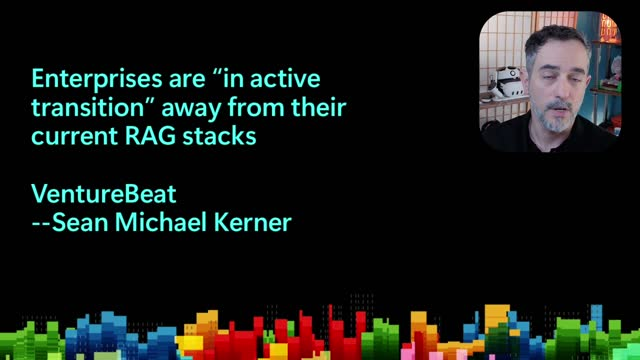
m10s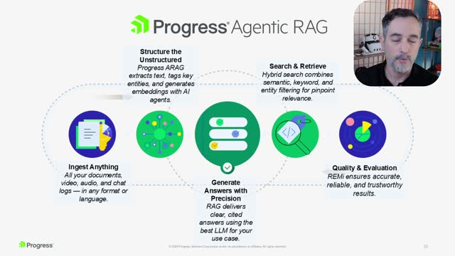
p05s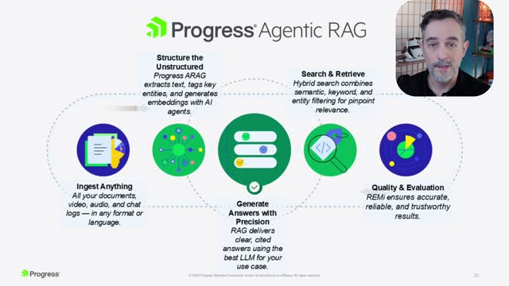
p10s) — A RAG-as-a-service offering that ingests video, audio, chat logs, and documents, with built-in document providers and agents for extracting tags, entities, and embeddings. - Hybrid search with agentic reranking (00:07:22
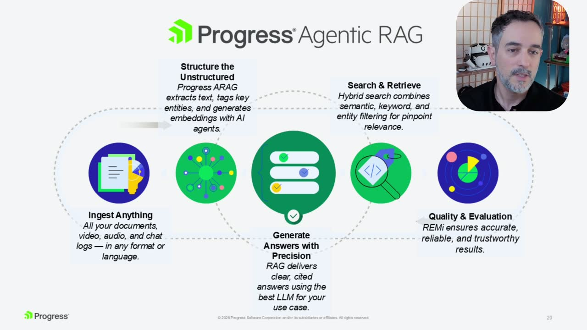
m05sm10sp05sp10s) — Combines keyword, semantic, and graph search, with results reranked by an AI agent. - REMi evaluation agent (00:07:34m05sm10sp05s
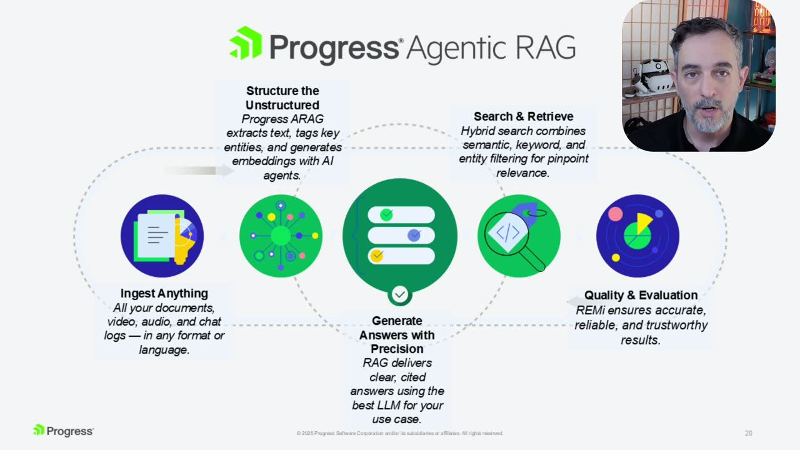
p10s) — An embedded AI quality-and-evaluation metric that assesses the system's stability as data is ingested and retrieved. - HTML widget builder and multi-language SDKs (00:07:57m05sm10sp05sp10s) — Administrators can deploy search widgets with citations, or use .NET, TypeScript/JavaScript, and Python SDKs plus REST APIs for custom builds.
{kind=link}
{kind=link}
{kind=link}
{kind=link}
{kind=link}
{kind=link}
{kind=link}
{kind=link}
{kind=link}
{kind=link}
{kind=link}
{kind=link}
{kind=link}
{kind=link}
{kind=link}
{kind=link}
Topics covered
- The distinction between context augmented generation (loading data into the context window) and retrieval augmented generation (vector database storage and retrieval).
- Cache augmented generation, exemplified by Copilot in Visual Studio Code holding project files as vector data.
- Vector embedding, semantic similarity search versus keyword search, and document chunking for ingestion.
- Citations as a means of grounding answers and proving they were not hallucinated.
- The complexity of end-to-end RAG architecture: user interfaces, embedding and chat models, document providers, text translation, and evaluation, requiring software engineering, data science, and AI expertise.
- Enterprises moving away from in-house RAG stacks toward agentic RAG.
- A demo building a financial dashboard that ingests PDF SEC filings and renders charts and conversational answers using the C# SDK and Blazor Server.
Notable quotes
"Citations are an important feature for tracing answers back to their origin and providing that the answer is grounded in real knowledge. In other words, the system can show receipts that prove the answer was not hallucinated." — Ed Charbeneau
"It's not humanly possible to make use of all that data we collect without using some sort of AI." — Ed Charbeneau
Products and tools mentioned
- Progress Agentic RAG
- REMi (evaluation agent)
- Telerik UI for Blazor
- Blazor Server
- C# / .NET SDK
- TypeScript/JavaScript SDK
- Python SDK
- Visual Studio
- GitHub Copilot in Visual Studio Code
- Google Gemini (YouTube transcript feature)
Speakers featured
- Ed Charbeneau — Principal Developer Advocate at Progress Software, 10-time Microsoft MVP
Follow-up resources
- progress.com (referenced for more information on Progress Agentic RAG, alongside an on-screen QR code linking to presentation resources including the financial services C# SDK and Blazor application)
Frames
{kind=link}
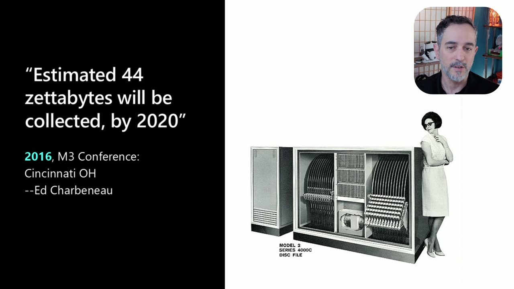
{kind=link}
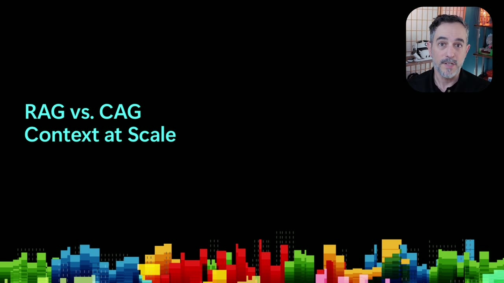
{kind=link}
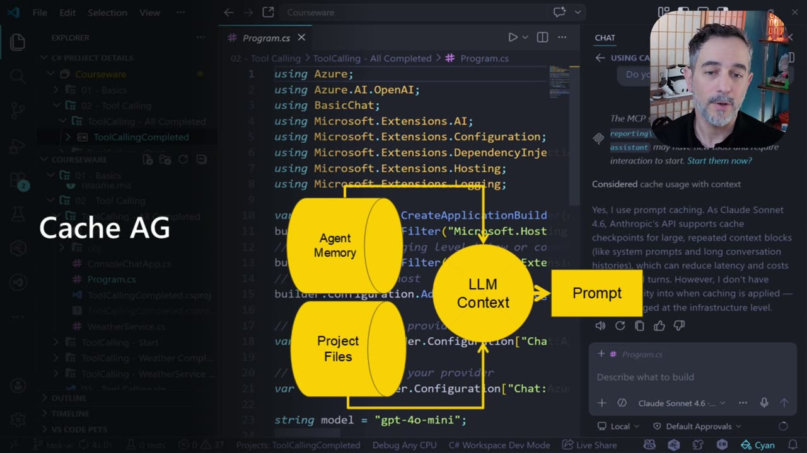
{kind=link}
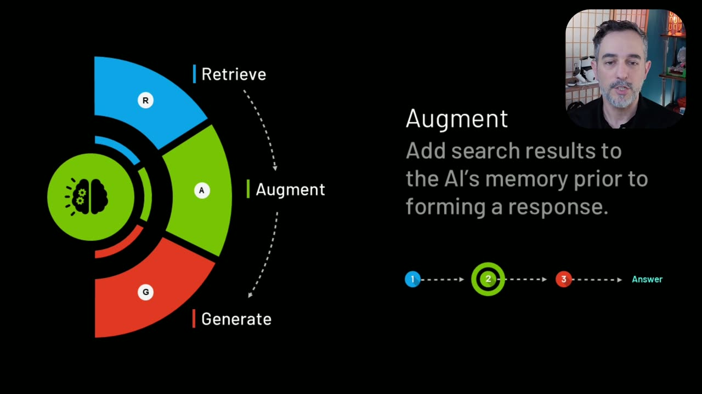
{kind=link}
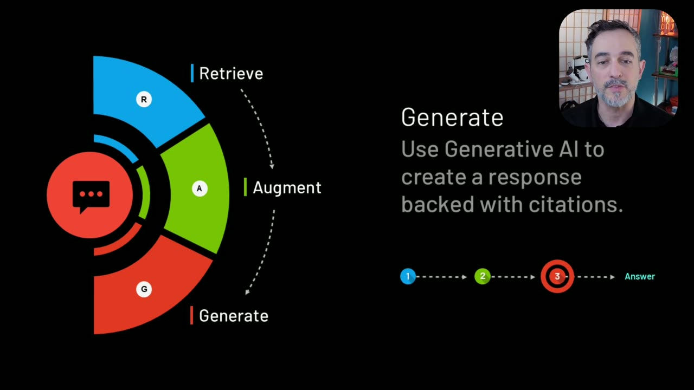
{kind=link}
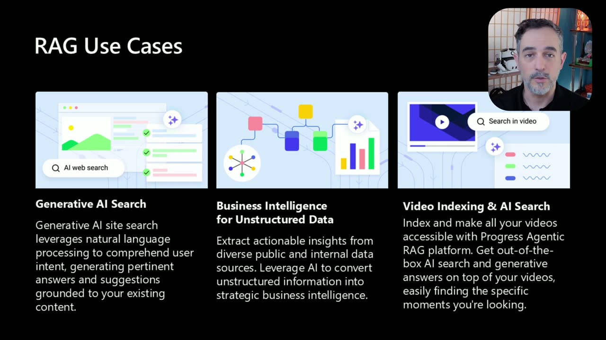
{kind=link}
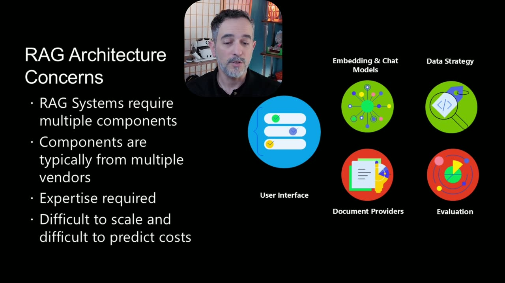
{kind=link}
{kind=link}
{kind=link}
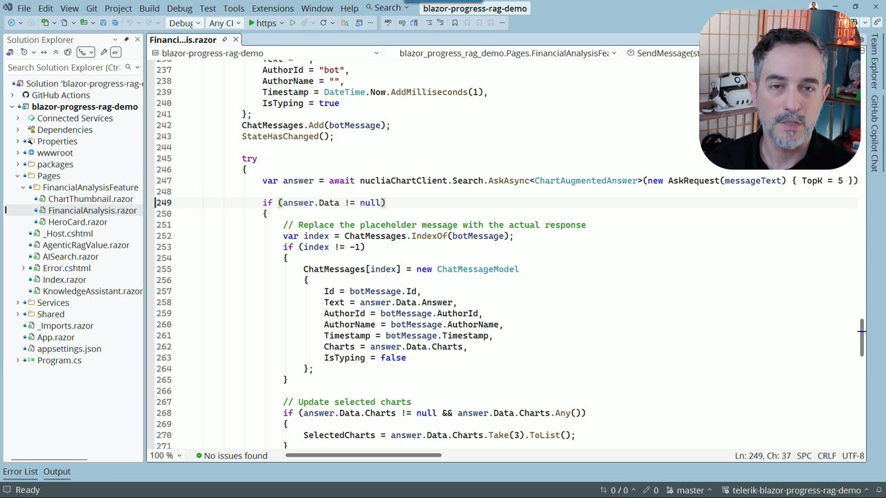
{kind=link}
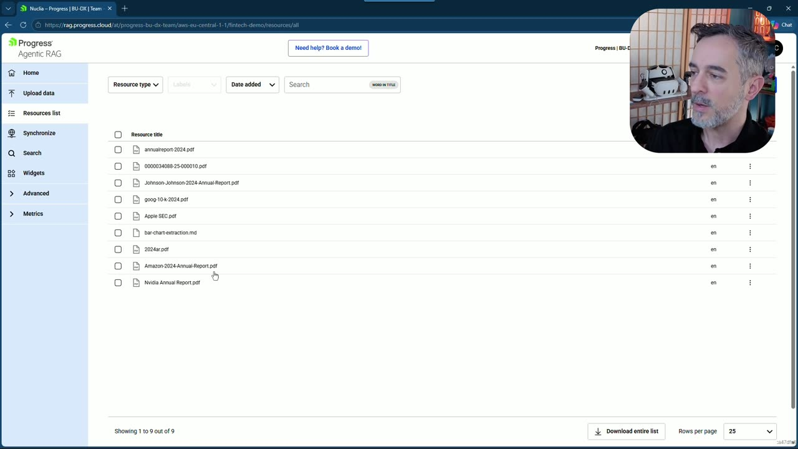
{kind=link}
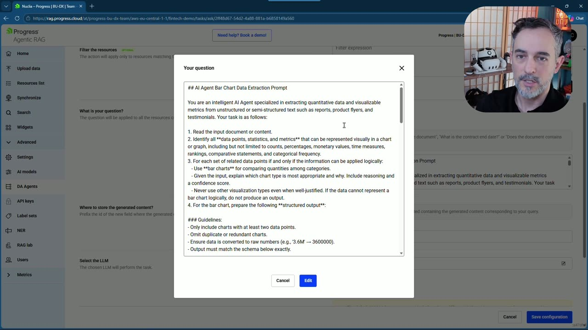
{kind=link}
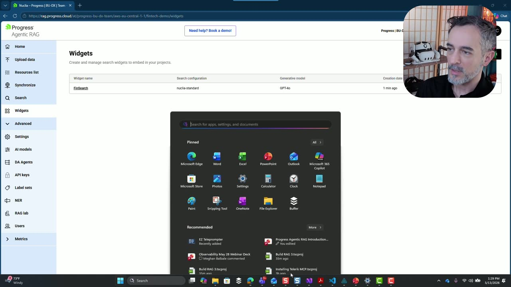
{kind=link}
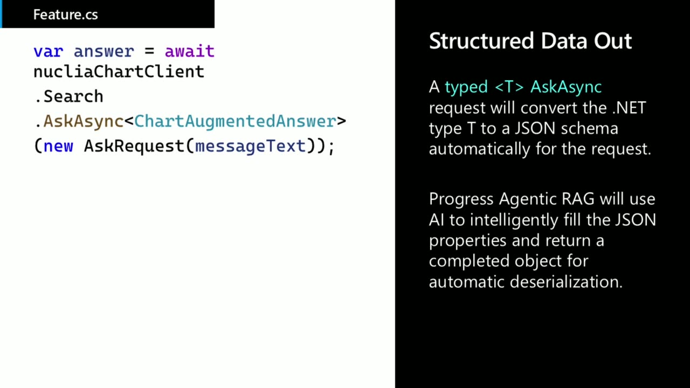
{kind=link}
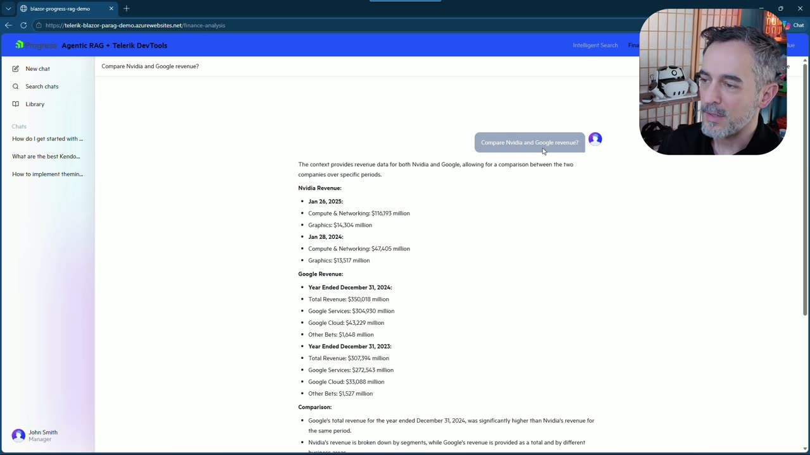
Transcript
Show / hide transcript (16,934 chars)
[00:00:01] ED CHARBENEAU: Hi. [00:00:01] I'm Ed Charbeneau, principal developer advocate here [00:00:04] at Progress Software and 10 time Microsoft MVP. [00:00:08] And today I'll be giving you an introduction [00:00:10] to retrieval augmented generation. [00:00:12] Over the next few minutes we'll talk [00:00:14] about why you should use RAG, [00:00:16] how retrieval augmented generation compares [00:00:18] to context augmented generation, [00:00:20] and the key concepts involved in RAG. [00:00:23] I'll also share an introduction to Progress Agentic RAG, [00:00:26] a RAG as a service platform. [00:00:28] First let's start with why retrieval augmented generation [00:00:32] is important today. [00:00:33] Using retrieval augmented generation is all [00:00:36] about making sense of your data. [00:00:38] I gave a session back at the M3 conference in 2016 [00:00:42] where I talked about the future of data storage [00:00:45] and how it relates to machine learning. [00:00:47] In that session it was estimated [00:00:49] that 44 zettabytes would have been collected by the year 2020. [00:00:55] Here we are in 2026 and we are generating [00:00:59] and collecting roughly 400 million terabytes [00:01:03] of data every day worldwide. [00:01:06] That's about 0.4 zettabytes a day or 147 zettabytes per year. [00:01:11] So why does that matter? [00:01:13] Well, we need to make sense of all that data we collect. [00:01:17] And back in 2016 my suggestion for doing this was [00:01:20] to use machine learning. [00:01:22] The reason for that is really simple. [00:01:24] It's not humanly possible to make use of all [00:01:28] that data we collect without using some sort of AI. [00:01:32] Today machine learning is a commodity in the form [00:01:35] of large language models and the task of sifting through data [00:01:39] for answers can be performed [00:01:41] by human operators assisted by agentic systems. [00:01:44] Before we can talk [00:01:45] about retrieval augmented generation it's important [00:01:48] to talk about context augmented generation. [00:01:51] These core concepts will help you understand the scale [00:01:54] of the technologies and architectures involved. [00:01:56] Context augmented generation is where we add data [00:01:59] to the context window of a large language model. [00:02:02] For example, we might take a file and upload it [00:02:05] in to the context window so we can ask questions [00:02:08] about the data contained in that file. [00:02:10] An example of this can be seen on YouTube. [00:02:13] There's a Gemini button on some YouTube videos [00:02:16] and when you click on that button the transcript [00:02:18] of that video is loaded in to the context window [00:02:21] of the large language model. [00:02:23] That allows you to query the video conversationally. [00:02:27] Another form of context augmented generation is cache [00:02:31] augmented generation. [00:02:33] This involves taking even more data [00:02:35] and storing it in vector memory. [00:02:37] You can then search through that memory structure, [00:02:40] pull out pertinent pieces of information and data, [00:02:43] and insert those in to the context [00:02:45] of the large language model. [00:02:47] An example of this can be seen inside of Copilot [00:02:50] within Visual Studio Code. [00:02:51] Your agent has memory of conversation. [00:02:54] Your project files are also loaded in to memory [00:02:57] as vector data for quick semantic searching. [00:03:00] And the large language model has access to all [00:03:03] of this data in its context. [00:03:05] When you ask it to perform coding activities it can reach [00:03:09] in to its cache, retrieve pertinent pieces of data, [00:03:11] and use those to generate code, answer questions, [00:03:15] create summaries, and so much more. [00:03:18] Retrieval augmented generation is another form [00:03:21] of context augmented generation. [00:03:23] This time it's using a vector database to store [00:03:26] and retrieve information [00:03:27] from large volumes using semantic similarity. [00:03:31] The retrieval portion [00:03:33] of retrieval augmented generation is all [00:03:35] about finding useful information through vector search. [00:03:39] This is different from traditional key word search. [00:03:42] Instead of searching for exact key words we use AI to search [00:03:46] for content with semantic similar meaning. [00:03:49] Once we find that information we retrieve it [00:03:52] from the vector database and place it [00:03:54] in to the context window of the large language model. [00:03:57] We then ask the large language model [00:03:59] to generate a new response using that information. [00:04:02] We can also ask it to create citations so users can trace [00:04:06] where the information originated. [00:04:08] Citations are an important feature for tracing answers back [00:04:12] to their origin and providing [00:04:14] that the answer is grounded in real knowledge. [00:04:17] In other words, the system can show receipts [00:04:20] that prove the answer was not hallucinated. [00:04:22] When we work with retrieval augmented generation we use [00:04:26] vector databases to store large amounts of data. [00:04:29] We do this by ingesting resources and passing them [00:04:32] through a vector embedding model. [00:04:33] That embedding model extracts the meaning from the text [00:04:37] so we can perform searches using semantic similarity. [00:04:40] If a document is large enough we may need to chuck that document [00:04:43] in to smaller bite sized pieces. [00:04:46] That makes it easier to ingest and store inside [00:04:49] of the vector database. [00:04:50] Because RAG can store large volumes of data it's perfect [00:04:54] for generative AI search. [00:04:56] Generative AI search empowers users by allowing them [00:04:59] to use natural language to query large data sets [00:05:02] without memorizing specific query syntax. [00:05:05] It also helps make sense of large volumes [00:05:07] of business data stored in unstructured formats [00:05:10] such as websites, PDFs, images, videos, [00:05:14] and many other resources. [00:05:16] And it does this all while querying them [00:05:18] as if they were coming [00:05:19] from a relational database thanks to AI. [00:05:22] And end to end RAG architecture is actually pretty complex. [00:05:27] It requires multiple system components [00:05:30] that are often sourced from multiple vendors. [00:05:33] For example, you'll need a user interface. [00:05:36] You'll need embedding and chat models. [00:05:38] You'll need to have a data strategy and document providers [00:05:41] for all of the documents I talked about whether it's PDF, [00:05:45] Office files, video images, etcetera. [00:05:48] You'll need a provider to translate those types [00:05:52] of documents in to text so they can be embedded [00:05:55] in to the vector database. [00:05:57] And then of course you'll want to evaluate the quality [00:06:00] of the data coming in and out of your RAG system. [00:06:03] This requires a lot of expertise to glue together all [00:06:07] of these different pieces [00:06:08] and the expertise involved is software engineering, [00:06:12] data science, and AI experts. [00:06:15] It's very difficult to scale [00:06:16] and it's also difficult to predict cost. [00:06:19] Some of these concerns were cited in a recent article [00:06:22] by VentureBeat where they suggested [00:06:25] that enterprises are transitioning away [00:06:27] of their current RAG stacks. [00:06:29] These were RAG systems that were built in house [00:06:33] and didn't have the fundamental knowledge [00:06:35] of agentic retrieval augmented generation [00:06:39] where agents help rerank search results [00:06:42] and evaluate system metrics as data's ingested and retrieved. [00:06:46] For a complete end to end solution that solves all [00:06:50] of these problems for you is Progress Agentic RAG. [00:06:54] Progress Agentic RAG is a rag as a service platform [00:06:58] that can ingest all sorts of documents whether it's video, [00:07:02] audio, chat logs or other information. [00:07:06] Document providers are already there in place [00:07:08] for you to ingest data. [00:07:10] It makes sense of structured and unstructured data [00:07:13] and there's agents within the system [00:07:15] that can extract key texts, tags, entities, [00:07:18] and generate embeddings all with large language models. [00:07:22] It has a hybrid search feature that includes key word search, [00:07:26] semantic search, and graph search. [00:07:29] And all of that is reranked by an agent. [00:07:32] It also has an embedded quality [00:07:34] and evaluation metric known as REMi. [00:07:36] This is an AI agent that evaluates the system's stability [00:07:40] as data's ingested and retrieved. [00:07:43] And all of Progress Agentic RAG can be managed through an easy [00:07:46] to use user interface that a system administrator can log [00:07:50] in to to ingest and manage data, orchestrate AI agents, [00:07:55] and check evaluation metrics. [00:07:57] For projects that require a quick turn [00:07:59] around time administrators can use an HTML widget builder [00:08:03] to create robust search experiences [00:08:06] that also include citation and retrieval. [00:08:09] For more complex scenarios such as building custom agents, [00:08:14] custom user interfaces, [00:08:15] or complete application architectures, [00:08:18] SDKs for.NET type script in Javascript [00:08:22] and Python are available as well as rest APIs. [00:08:27] Let's take a look at a customization scenario [00:08:29] and see how this would work with.NET and Blazor. [00:08:32] For this demo we're going [00:08:34] to create a business dashboard using Progress Agentic RAG [00:08:38] and Blazor Server and connect them using the C Sharp SDK. [00:08:42] The financial dashboard that we're going [00:08:44] to create will ingest PDF financial statements [00:08:48] and extract pertinent information from those PDFs [00:08:51] so we can generate visualizations such as charts [00:08:54] and graphs and also have conversations [00:08:57] with the AI regarding the data in those PDFs. [00:09:00] The first step is to log in to our Progress Agentic RAG system [00:09:04] and once we log in we're greeted [00:09:06] with our Progress Agentic RAG dashboard. [00:09:09] From here we can see metrics on quality, storage, [00:09:14] and the last resources that were ingested. [00:09:17] From the upload tab we can upload new resources in the form [00:09:21] of files, folders, links, text resources, entire site maps, [00:09:27] and Q and A resources. [00:09:29] The file resources can be any office type. [00:09:33] They can be videos, images, and audio files like MP3s. [00:09:37] I've already ingested some resources here [00:09:40] and I can see them in my resource list [00:09:42] and I have some reports from some [00:09:45] of the big companies of the world. [00:09:47] We have Amazon, Apple, and so on. [00:09:51] So if I look at Apple's SEC filings I can see [00:09:54] that I have a resource here in my file field [00:09:58] and this is the entire SEC filing [00:10:00] in PDF form that's been ingested [00:10:02] in to the Progress Agentic RAG system. [00:10:05] I also have some generated fields and these fields are data [00:10:08] that has been extracted from the PDF using AI agents [00:10:15] that are running on the data in the background. [00:10:18] Those AI agents are configured in our agent screen [00:10:22] within the Progress Agentic RAG system and you can test [00:10:26] and evaluate those agents within the UI here. [00:10:30] This agent in particular has been configured [00:10:33] to extract chart friendly data from the unstructured files [00:10:39] that are being ingested in to the system. [00:10:41] This is a step that helps the retrieval agent find the data [00:10:45] that we're looking for when we start providing structured data [00:10:49] types to the system as queries. [00:10:51] Once I've ingested data [00:10:53] in to the system I have a simple search window that I can come in [00:10:57] and use to check my data that has been ingested. [00:11:01] So, for example, I can ask questions [00:11:03] about what was Apple revenue and I'll get a response [00:11:10] from the system that Apple's total net sales [00:11:13] from 2024 were $391 million. [00:11:18] This simple search can be converted in to a widget [00:11:20] by hitting create widget and then I can quickly deploy [00:11:24] that widget to a web page using some HTML snippets. [00:11:29] For something more advanced I'm going to use the C Sharp SDK. [00:11:33] So I'm going to go in to Visual Studio now and look [00:11:37] at an application that uses the C Sharp SDK alongside Blazor [00:11:42] Server to produce a completely custom user interface. [00:11:46] To quickly retrieve an answer from Progress Agentic RAG [00:11:51] within the SDK I can call upon the search interface [00:11:55] and use the ask async method. [00:11:57] With the ask async method I have the option to supply a structure [00:12:02] that I would like the Progress Agentic RAG system to fulfill. [00:12:06] This is just a plain class object. [00:12:08] This one is called chart augmented answer. [00:12:10] And I'm going to pass that type along with the user's request [00:12:16] and when the type is passed [00:12:19] in to the system this chart augmented answer gets turned [00:12:23] in to a JSON structure. [00:12:25] That JSON structure is then seen by the retrieval agent [00:12:29] and the retrieval agent will map the values [00:12:32] from the search results in to the JSON structure [00:12:36] and fulfill all of the properties that we ask for. [00:12:40] That gets serialized back in to [00:12:43] that chart augmented answer object within our application [00:12:47] and then I can easily display that information on the screen [00:12:51] to the user in the form of text and charts. [00:12:54] Now the application is running in the browser [00:12:57] and I have a completely customized user interface [00:13:00] that was built using the Telerik UI for Blazor component library [00:13:05] and is all backed [00:13:07] by the Progress Agentic RAG C Sharp SDK. [00:13:11] In my chat interface I have some suggestions here [00:13:14] so I can compare Nvidia and Google's revenue at the click [00:13:17] of a button or I can enter a query just using [00:13:20] natural language. [00:13:22] So when I compare Nvidia to Google you can see [00:13:25] that I get a detailed comparison in text, but I also have a chart [00:13:30] that I can open and when I open the chart that structured data [00:13:33] that I asked for from Progress Agentic RAG is relayed back [00:13:37] to my Blazor application so it can be easily passed off [00:13:41] to some UI components for rendering chart data. [00:13:44] This just shows the depth of how custom you can go [00:13:47] with Progress Agentic RAG and SDKs available [00:13:51] and whatever front end technology that you like to use. [00:13:54] For more information [00:13:55] about Progress Agentic RAG visit progress.com [00:13:58] and you can also use the QR code shown on screen to gather all [00:14:02] of the resources that were found [00:14:03] in this presentation including the financial services [00:14:07] application that uses the C Sharp SDK in Blazor. [00:14:11] Thank you for joining me and I hope you learned something [00:14:13] about retrieval augmented generation. [00:14:16] Enjoy the rest of build.